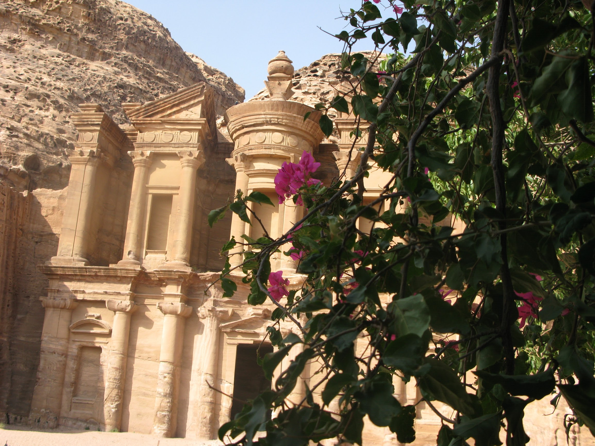
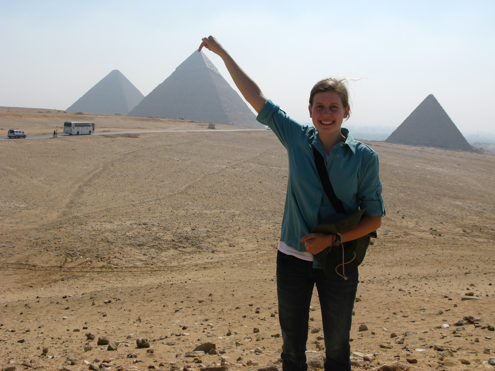
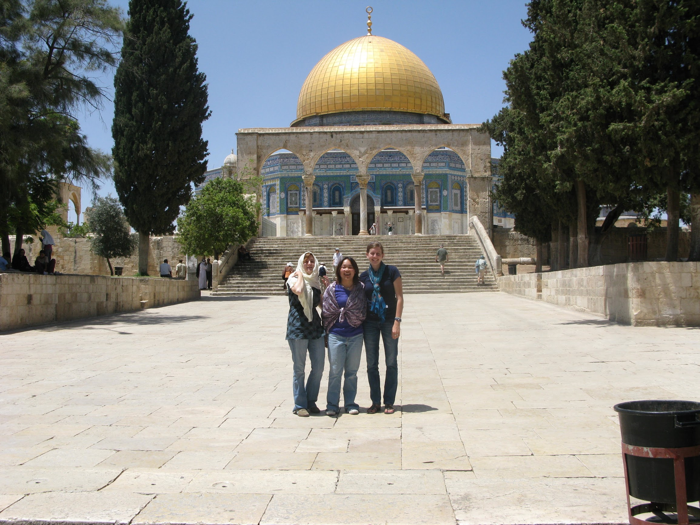
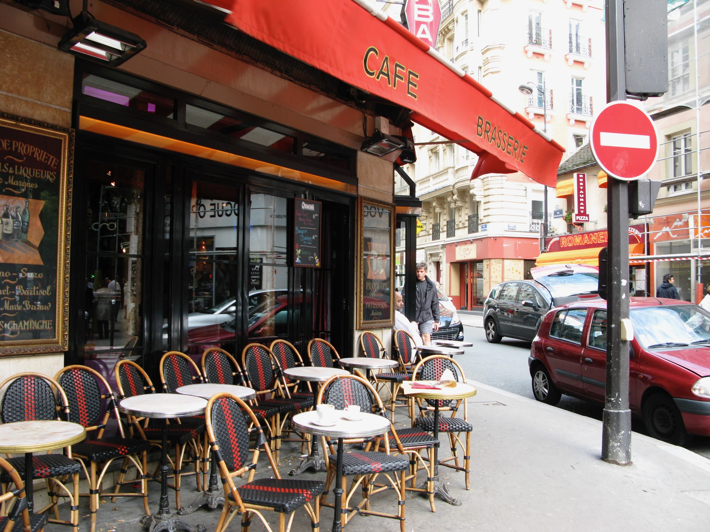
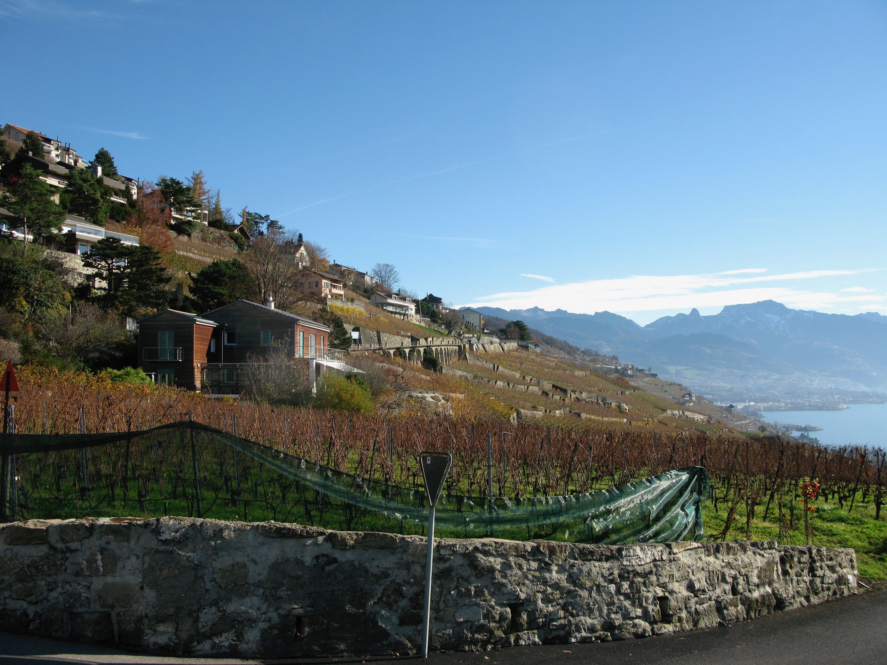
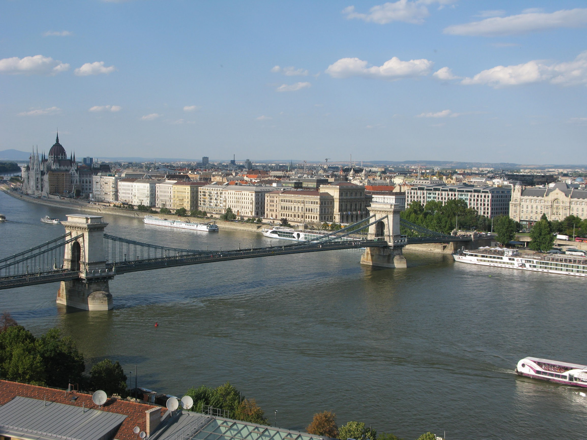
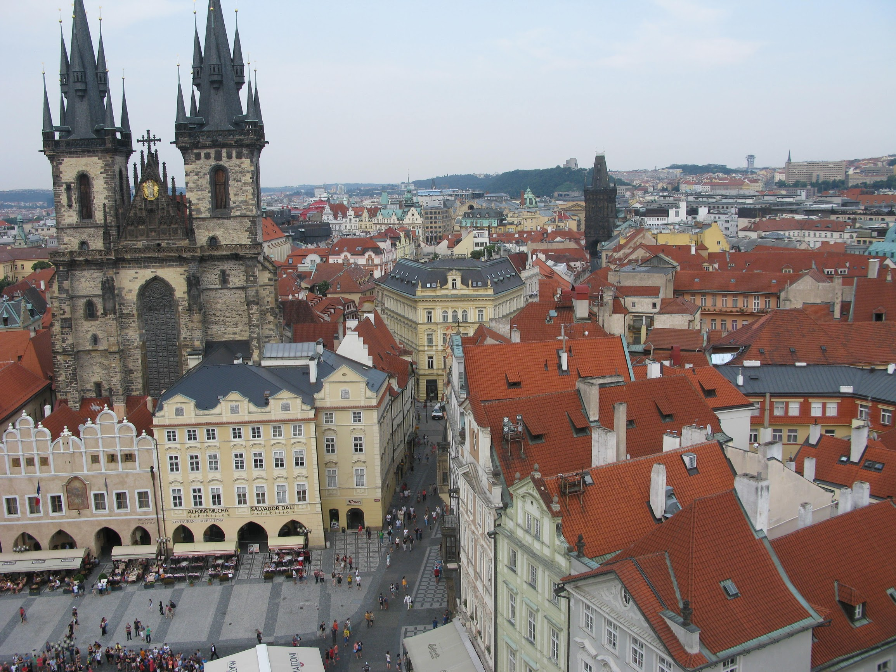
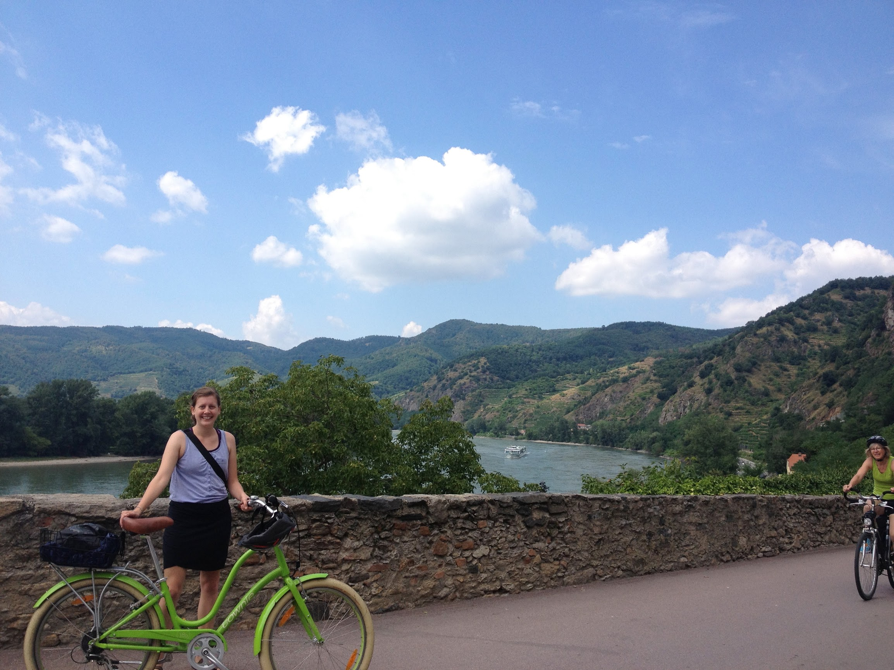

Brenna's Travels
Countries I've been to
Jordan
Went to Jordan as part of an archaeological dig with my history professor. We stayed in Dhiban, Jordan and took trips to visit other parts of the country like the Dead Sea and Petra.
Egypt
Traveled to Cairo from Jordan taking a ferry across the Red Sea. I got to see the Great Pyramids.
Palestine & Israel
Stayed with my friend's family in Ramallah. We took trips to Bethlehem and visited the markets.
France
I spent a semester in Besançon, France. I ate my weight in chocolate croissants and fresh baguettes. I took many trips to Paris with my host mom.
Switzerland
Traveled with my French host mom to Switerland. We went to art museums and explored the beautiful mountain towns.
Hungry
My cousin and I flew into Hungry and enjoyed seeing the different Buda and Pest cities. We also enjoyed a traditional turkish bath.
Austria
Enjoyed touring the historical city center and drank original budweiser beer.
Vienna
Took a biking wine tour along the Danube River.